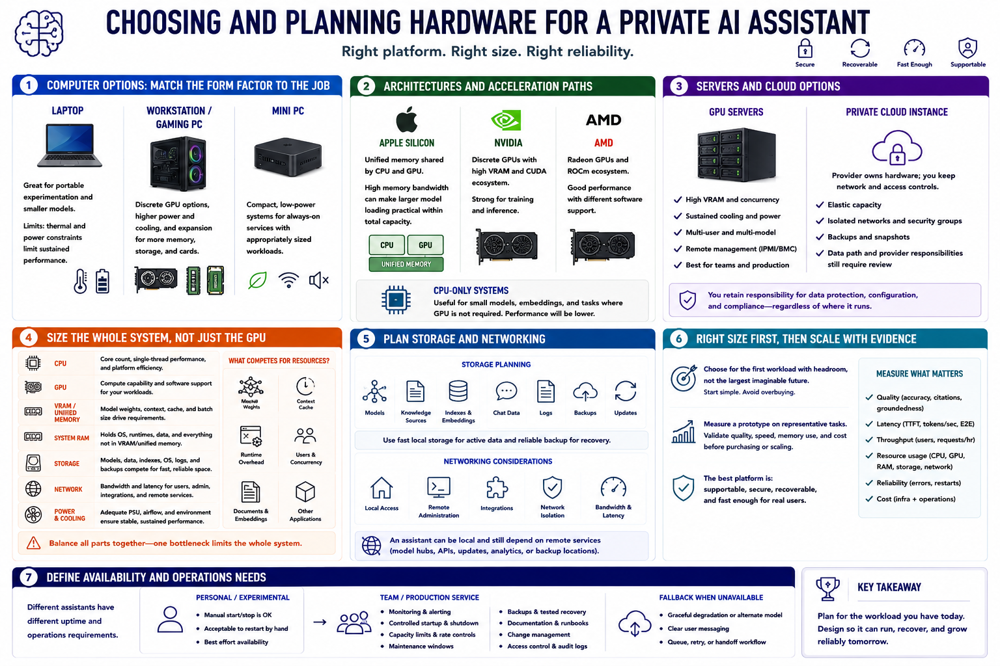

Choosing the Infrastructure
Connecting to LMS... Progress: in progress

Narration
A laptop can support portable experimentation and smaller models but has thermal and power limits. A workstation or gaming PC offers discrete GPU options and expansion. A mini PC favors compact low-power service for appropriately sized workloads.
Apple Silicon uses unified memory shared by CPU and GPU, which can make larger model loading practical within total capacity and bandwidth. NVIDIA, AMD, and CPU-only systems use different acceleration paths and software support.
GPU servers can provide memory, concurrency, remote management, and sustained cooling for multiple users. A private cloud instance can shift hardware ownership while retaining organizational network and access controls. Its data path and provider responsibilities still require review.
Size CPU, GPU, VRAM or unified memory, system RAM, storage, network, power, and cooling together. Model weights, context cache, runtime overhead, users, documents, embeddings, and other applications compete for resources.
Storage planning includes models, knowledge sources, indexes, chat data, logs, backups, and updates. Networking includes local access, remote administration, integrations, isolation, and bandwidth. An assistant can be local and still depend on remote services.
Choose for the first workload with headroom, not the largest imaginable future. Measure a prototype on representative tasks before purchasing or scaling. The best platform is supportable, secure, recoverable, and fast enough for real users.
Define availability needs. A personal assistant may tolerate manual restart, while a team service needs monitoring, controlled startup, capacity limits, maintenance windows, recovery documentation, and a fallback when the model is unavailable.